Проектный семинар «Сбор и систематизация данных на примере территорий жилой застройки»
Модуль 1 · занятие 4
26
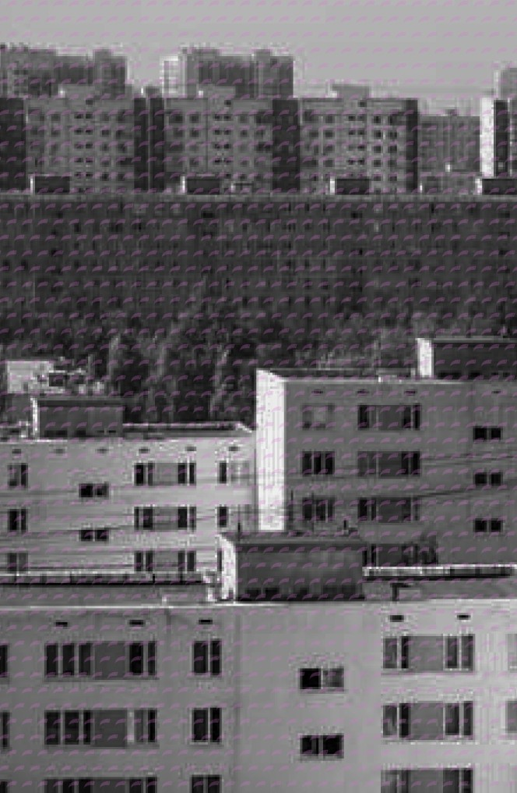
Образовательная программа:
Городское планирование
Средовой анализ придомовых территорий: проблемы и предпосылки
Коньково, территория №2 · Команда 2
Команда 2
Москва 2026
Проектный семинар · модуль 1
Занятие 4
сл.1
Команда
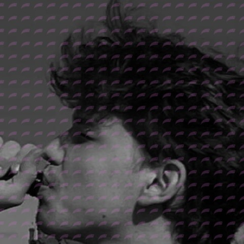
01
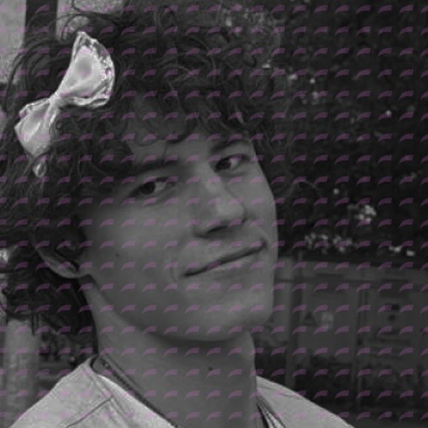
02
03
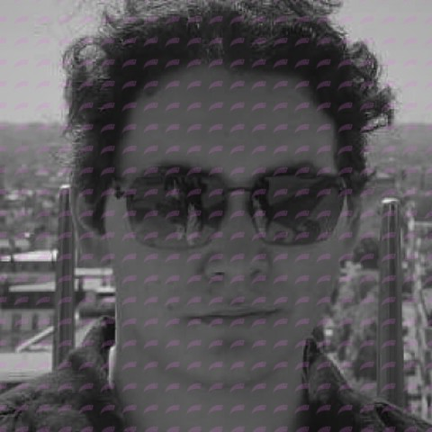
04
05
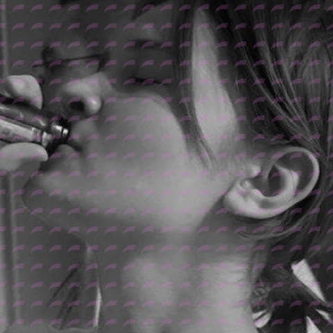
06
01
Степанов Вадим
оформление и дизайн, QGIS, AutoCAD, итоговая презентация
02
Разумов Никандр
QGIS, AutoCAD, таблицы, доработка идей
03
Татулин Никита
оформление, QGIS, AutoCAD, таблицы
04
Абдрахимов Рашит
QGIS, таблицы, доработка идей
05
Бартенев Кирилл
полевой выход и фото, таблицы, анализ
06
Кудинова Софья
тимлид: QGIS, таблицы, обстановка в команде
Средовой анализ придомовых территорий жилой застройки
Команда 2
Москва 2026
Проектный семинар · модуль 1
Занятие 4
сл.2
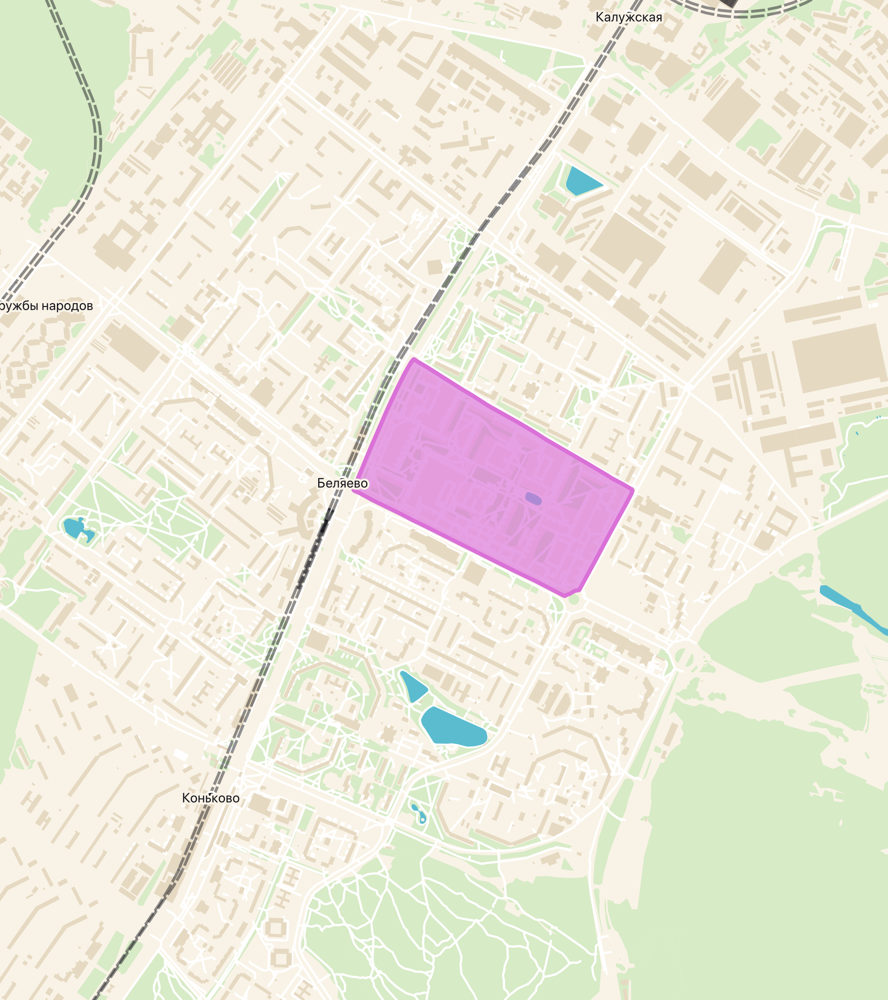
0
500
1000 м
Наша территория
м. «Беляево»
31 га
площадь территории
52
ячейки, 42 из них в анализе
91
здание, у 46 есть паспорт
28 из 30
домов с известным материалом стен — панельные
Коньково, территория №2
Квартал между Профсоюзной улицей и улицами Миклухо-Маклая, Генерала Антонова и Введенского. Один из выходов метро «Беляево» открывается прямо на западный край территории, а через Миклухо-Маклая — большой переход к ТЦ с «Ашаном». Поэтому через дворы весь день идут люди: к метро, к магазинам, к остановкам.
Застройка 1968–1974 годов: панельные девятиэтажки серий II-57 и 1605-АМ, несколько башен в 12–17 этажей, две школы и детский сад внутри квартала.
Средовой анализ придомовых территорий жилой застройки
Команда 2
Москва 2026
Вступление
Проектный семинар · модуль 1
Занятие 4
сл.3
Что мы искали и как считали
Задание занятия 4: найти в каждом дворе нарушения по 11 пунктам методики, понять, где они скапливаются, и что в квартале уже работает и может стать опорой для проекта.
01
Собрали данные
Полевой выход с QField, топооснова, чертёж ячеек. Всё свели в слои ГИС и проверили геометрию.
02
Разбили на ячейки
52 ячейки по домам, заборам и дорожкам. В анализе 42 — все дворы и полосы, куда выходят подъезды.
03
Прошли все слои
Комфорт, входы, здания, покрытия, сети, потоки людей, контроль и освоенность.
04
Проверили 11 пунктов
Для каждой ячейки — нарушен пункт или нет. Пороги взяли из методики, а где их нет, задали сами.
05
Сложили счёт
Счёт ячейки — сколько пунктов нарушено. По нему три класса: низкий, средний, высокий.
06
Нашли опоры
Ядро проблемных дворов, проверка, насколько счёт устойчив, и то, на что можно опереться.
42
ячейки в анализе
11
пунктов проверки
151
нарушения во всех ячейках
7
ячеек с высоким счётом
Средовой анализ придомовых территорий жилой застройки
Команда 2
Москва 2026
Вступление
Проектный семинар · модуль 1
Занятие 4
сл.4
Полевой выход и данные
Что отметили на месте
Точек
Бортовой камень
92
Здания
65
Входы во дворы
61
Откосы
58
Ограждения
34
Подпорные стенки
18
Прочее
9
Всего
341
Как это было
Мы обошли квартал с телефонами и QField: каждый вход, забор, откос и бортовой камень — точкой на карте и фото. Всего 341 точка и 282 снимка. В субботу считали пешеходов на 25 точках по периметру — эти замеры потом показали, где ходят к метро и к «Ашану».
фото: въезд во двор
фото: откос у дома
фото: ограждение школы
фото: арка в доме
Средовой анализ придомовых территорий жилой застройки
Команда 2
Москва 2026
Вступление
Проектный семинар · модуль 1
Занятие 4
сл.5
11
11 пунктов проверки
Методика задаёт 11 пунктов — от формы двора до заброшенных мест. Каждую ячейку проверяли по всем: пункт либо нарушен, либо нет.
Счёт ячейки — число нарушенных пунктов, от 0 до 11. Чем он выше, тем больше в дворе причин для дискомфорта.
Классы ячеек
0–3
низкий
4–5
средний
6 и больше
высокий
Пункт
Что проверяем
Правило для ячейки
Ячеек
1.1
Форма и размеры двора
Балл комфорта ниже 0,67
23
1.2
Неорганизованный вход
Неоформленный вход до 8 м от ячейки
16
1.3
Вне границ двора
Ячейка вне зафиксированных границ
2
1.4
Изношенное здание
Износ от 40 % до 8 м от ячейки
30
2.1
Загрузка с заездом грузовиков
Зоны загрузки от 50 м² в ячейке
15
2.2
Опасный открытый объект
Опасный объект до 6 м от ячейки
12
2.3
Совмещение потоков
От 20 м общего проезда с высокой нагрузкой
8
3.1
Транзит через двор
От 20 м высокого транзита у подъездов
7
3.2
Сервис с внешним транзитом
Магазин или сервис у людного транзита
1
3.3
Площадка без присмотра
Ближняя — вне активного, дальняя — вне пассивного контроля
5
3.4
Нет контроля или заброшено
Спорный контроль от 5 %, без контроля от 50 %, заброшено от 25 %
32
Средовой анализ придомовых территорий жилой застройки
Команда 2
Москва 2026
Вступление
Проектный семинар · модуль 1
Занятие 4
сл.6
Ячейки и границы анализа
Ячейки — участки между домами, заборами и дорожками: так их видит человек во дворе. Шесть полос вдоль улиц (15, 22, 29, 39, 47, 51) мы теперь считаем полноценными дворами — подъезды выходят прямо в них. Ячейки 14 и 28 остаются вне зафиксированных границ.
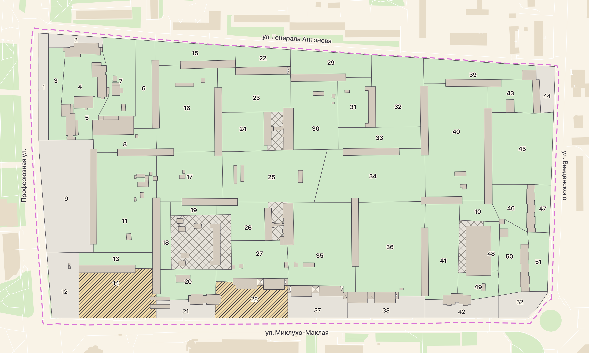
0
100
200 м
Легенда
дворы в зафиксированных границах — 34
включены в анализ в v14 — 6
вне зафиксированных границ, с подъездами — 2
краевые полосы, вне анализа — 10
участки школ и детсадов
Ячейка — единица счёта: все 11 пунктов проверяем для каждой из 42 ячеек.
Средовой анализ придомовых территорий жилой застройки
Команда 2
Москва 2026
01 Пространство
Проектный семинар · модуль 1
Занятие 4
сл.7
Входы во дворы
Вход — место, где улица переходит во двор. Мы оставили только настоящие входы: на внешнем крае дворов. Внутренние проходы между дворами убрали, а там, где с улицы во двор ведёт тропа, — добавили.
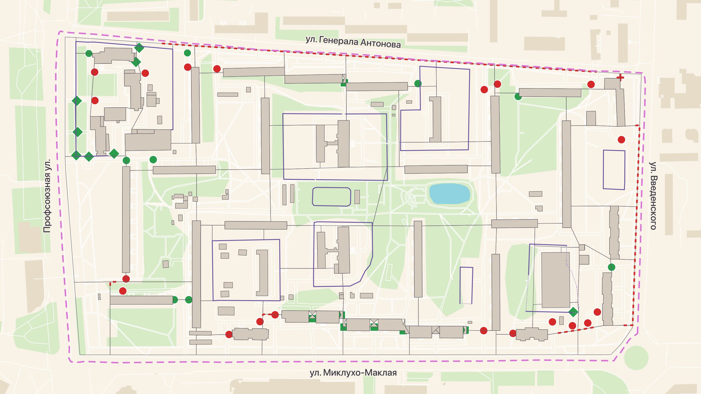
0
100
200 м
организован — 25
не организован — 38
арка — 9
ворота — 6
калитка — 5
разрыв в застройке — 5
въезд — 19
разрыв в насаждениях — 7
не зафиксирован — 12
высокое ограждение
край дворов (линия входа)
63
входов с улиц во дворы
38
ничем не оформлены
Из 70 точек обследования 28 оказались проходами внутри квартала, ещё 21 входа мы нашли по сети дорожек.
Оформлен / нет
въезд
1 / 18
не зафиксирован
0 / 12
арка
9 / 0
разрыв в зелени
0 / 7
ворота
6 / 0
разрыв в застройке
4 / 1
калитка
5 / 0
Хуже всего въезды: 18 из 19 — просто проезжая часть, без ворот и арок.
Средовой анализ придомовых территорий жилой застройки
Команда 2
Москва 2026
01 Пространство
Проектный семинар · модуль 1
Занятие 4
сл.8
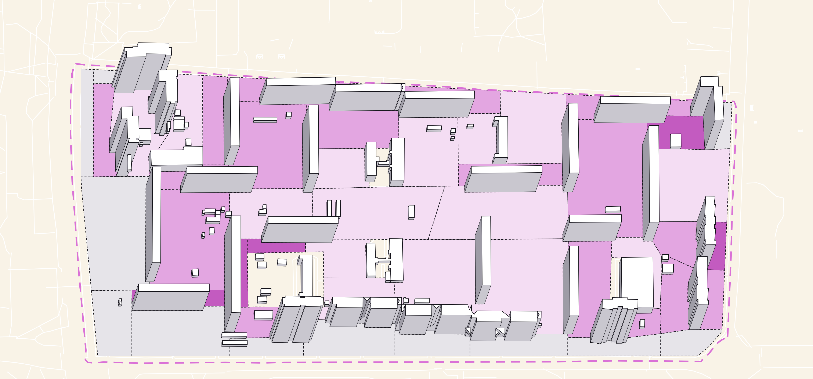
Вертикальные пропорции ячеек
Площадь фасадов вокруг двора, делённая на его площадь. Этаж — 3 м; 45 построек без паспорта — в один этаж.
высокий, 1,3–2,0
средний, 0,6–1,3
низкий
1,3
2,2
2,0
0,8
0,5
1,2
0,6
0,7
1,4
0,5
0,8
0,7
0,6
1,6
1,4
1,2
1,1
0,8
0,6
0,1
0,4
0,6
1,1
0,7
0,4
0,4
0,3
0,8
0,4
0,6
0,6
0,9
0,7
0,9
1,5
0,4
1,2
1,7
0,4
0,9
1,0
1,3
Средовой анализ придомовых территорий жилой застройки
Команда 2
Москва 2026
Комфортных дворов — 19 из 42
Комфорт двора — три критерия методики, по 0–2 балла: пропорции (высота домов к ширине двора), замкнутость (сколько границы закрыто домами и заборами) и размер (до 140 м двор «читается» целиком).
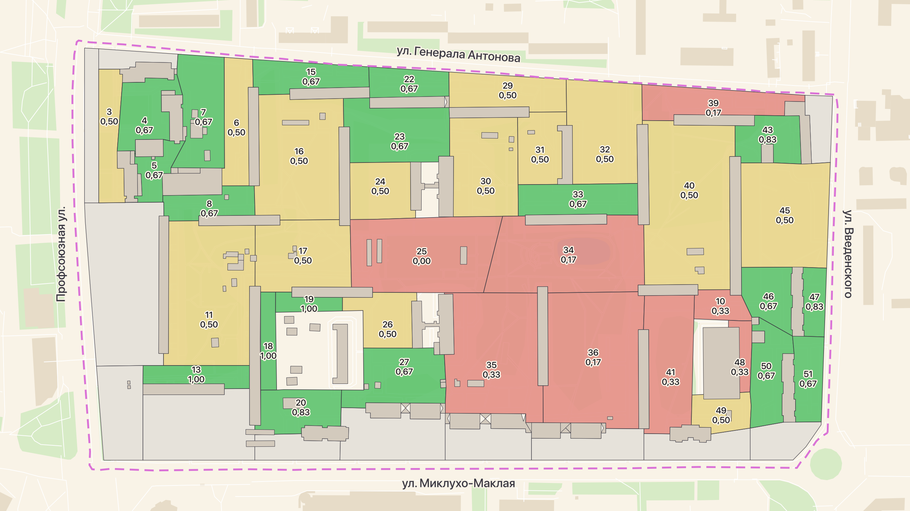
0
100
200 м
комфортная, балл от 0,67
почти: 0,50–0,66
некомфортная, ниже 0,50
вне анализа
19 из 42
дворов набирают две трети баллов
Пропорции
5
19
18
Замкнутость
14
22
6
Размер до 140 м
31
11
Хуже всего — центр квартала: огромные дворы 25 и 34 между длинными домами почти не держат форму. А небольшие дворы у школ и на углах (13, 18, 19) — самые уютные.
Средовой анализ придомовых территорий жилой застройки
Команда 2
Москва 2026
01 Пространство
Проектный семинар · модуль 1
Занятие 4
сл.10
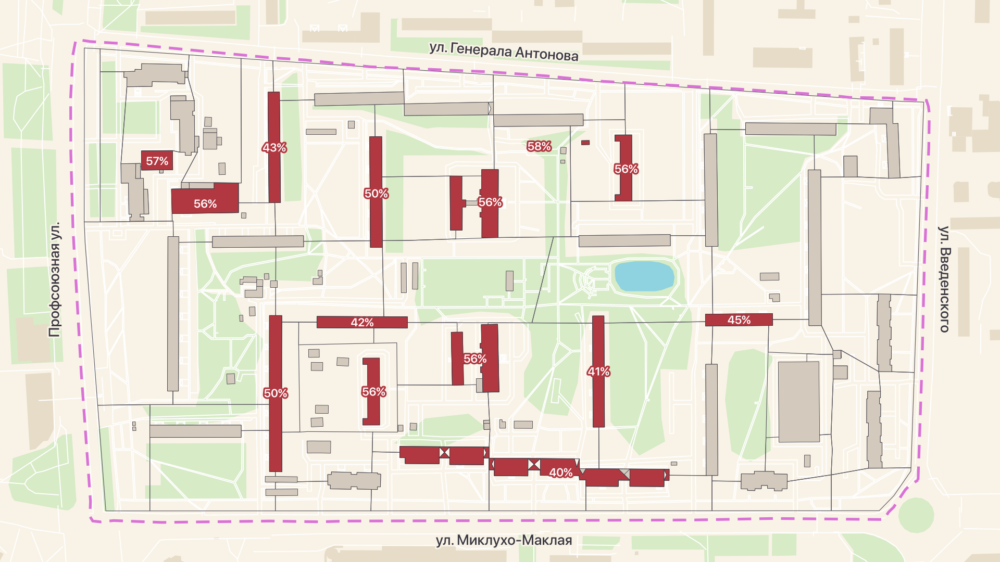
0
200
400 м
Износ зданий
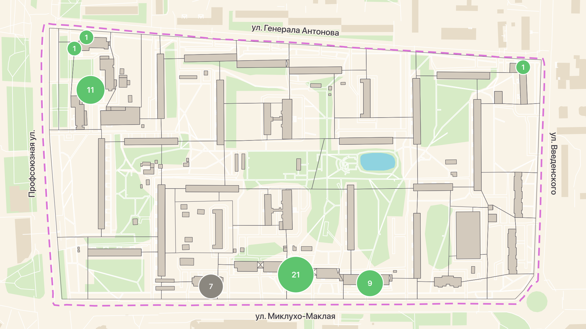
0
200
400 м
Бизнес: кластеры
Здания: износ и бизнес
В квартале 91 здание. Паспорт — год, серия, материал стен, этажность — есть у 46, остальные — гаражи, павильоны и пристройки.
14
зданий с износом от 40 %
6 — по данным паспорта, 8 — наша оценка по году и материалу стен. Среди них обе школы и детский сад.
51
объект бизнеса
Почти все — в первых этажах домов вдоль Миклухо-Маклая и в торговом блоке у Профсоюзной. На карте они собраны в кластеры.
износ 40 % и больше — 14
износ меньше 40 % или нет данных
благоприятный: 28
индифферентный: 20
опасный: 3
число в кружке — объектов в кластере
Вывод
Износ — самый частый пункт: изношенное здание рядом у 30 ячеек из 42 (п. 1.4).
Средовой анализ придомовых территорий жилой застройки
Команда 2
Москва 2026
01 Пространство
Проектный семинар · модуль 1
Занятие 4
сл.11
Озеленение, стоянки и загрузка
Газоны и деревья — из нового чертежа ячеек, разделены так же, как раньше: кроны со спутника и массивы деревьев — «деревья», остальное — «газон». Стоянки сверили с чертежом.
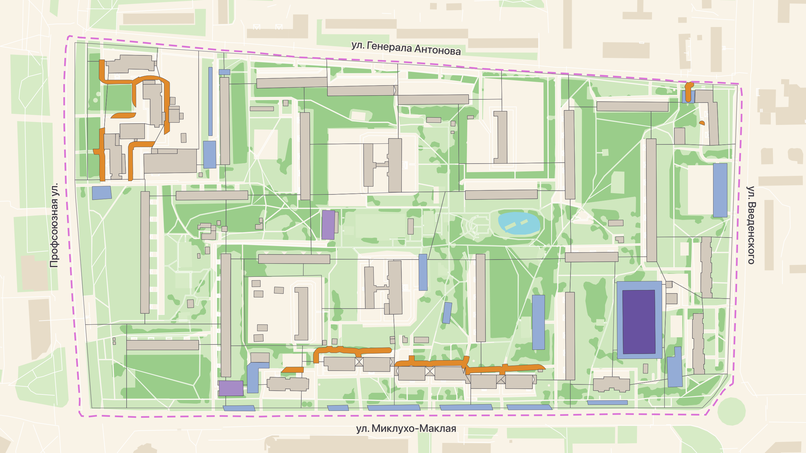
0
100
200 м
газон
деревья
открытая стоянка
гаражи
многоуровневый паркинг
зона загрузки
18,9 га
газонов и деревьев — больше половины свободной земли
газон 11,3 га
деревья 7,6 га
21
стоянка, 1,5 га: 6 из них мы нашли только по новому чертежу
Средовой анализ придомовых территорий жилой застройки
Команда 2
Москва 2026
02 Функции
Проектный семинар · модуль 1
Занятие 4
сл.12
Опасные объекты и загрузка
Опасный открытый объект — место, рядом с которым неприятно и небезопасно: мусорные площадки, пивные и алкомаркеты с выходом во двор. Мусорные площадки отнесли к опасным сами — это наше допущение.
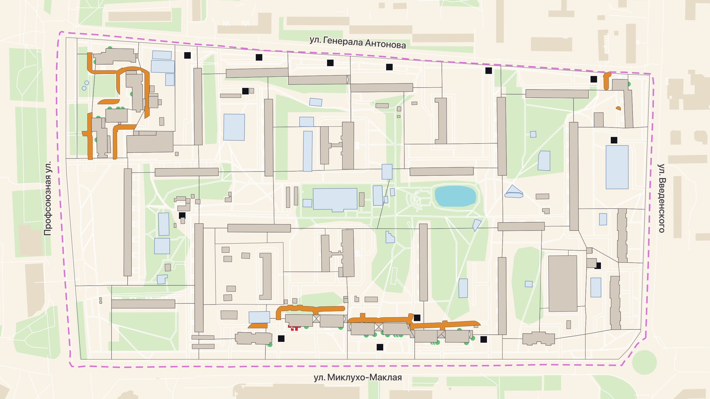
0
100
200 м
мусорная площадка — 14
опасный открытый бизнес — 2
благоприятный бизнес — 28
зона загрузки — 28
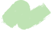
площадки
16
опасных объектов, 14 — мусорные площадки
28
зон загрузки, 0,75 га
Вывод
Грузовики заезжают к магазинам прямо через дворы домов на Миклухо-Маклая. Мусорки стоят у проездов — рядом с ними 12 ячеек (п. 2.2).
фото: мусорная площадка у дома
Средовой анализ придомовых территорий жилой застройки
Команда 2
Москва 2026
02 Функции
Проектный семинар · модуль 1
Занятие 4
сл.13
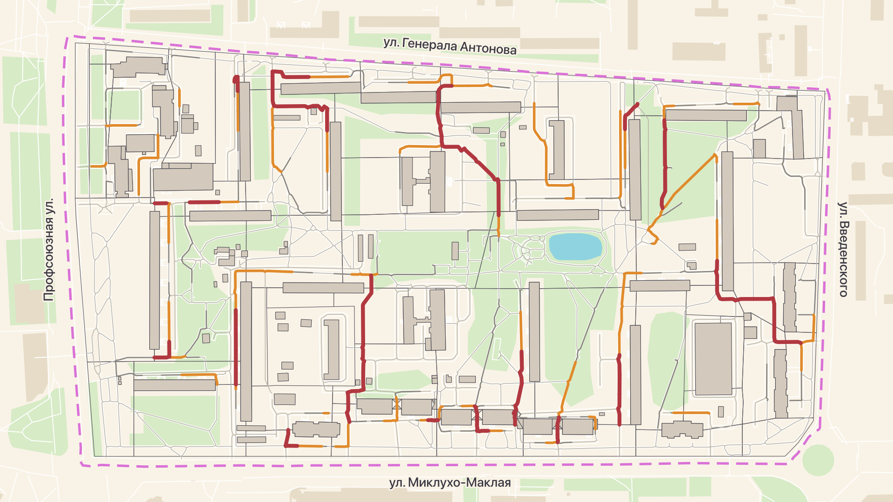
0
200
400 м
Пешеходное дерево путей
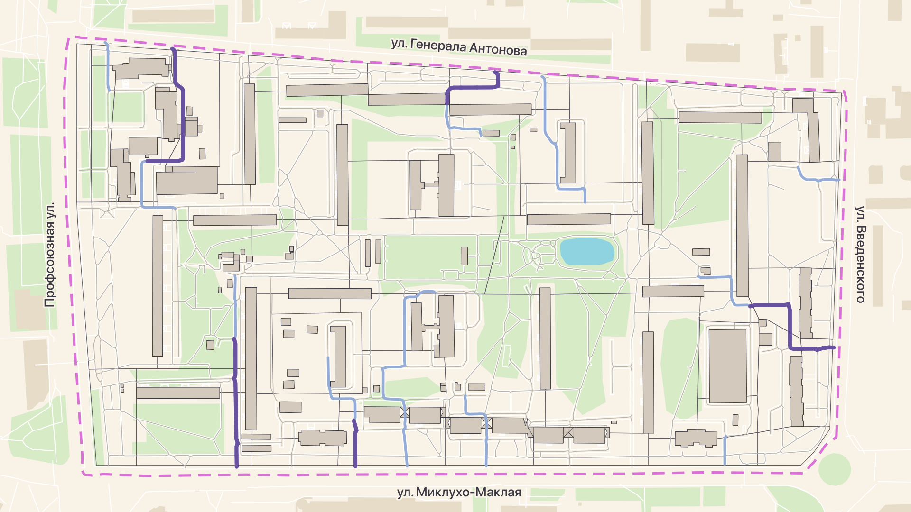
0
200
400 м
Транспортное дерево путей
Как ходят и ездят
Пешеходное дерево: от каждого подъезда, входа в организацию и площадки — кратчайший путь до ближайшего входа во двор. Всего 192 пути по сети из 19 км дорожек и проездов. Транспортное: от каждого дома до ближайшего выезда на улицу.
Пешком, км
4 пути и больше — 1,3 км
2–3 пути — 2,3 км
один путь — 2,6 км
прочие дорожки и проезды
На машине, км
4 пути и больше — 0,6 км
2–3 пути — 1,1 км
прочие проезды и дорожки
Что видно
Участки с одним путём — это подходы к конкретному дому, их задание исключает. Остальное — каркас квартала: 1,3 км пешеходных осей, по которым идут 4 пути и больше, и 0,6 км нагруженных проездов у главных выездов. Серым — вся остальная сеть, ей пользуются реже.
Средовой анализ придомовых территорий жилой застройки
Команда 2
Москва 2026
02 Функции
Проектный семинар · модуль 1
Занятие 4
сл.14
Пешеходы на проезжей части
Тротуаров во дворах мало: из путей, по которым ходят люди, 2,8 км идут прямо по проезду, 0,8 км — по тротуару и 2,6 км — отдельно. Опаснее всего там, где на одном проезде нагружены и пешеходы, и машины.
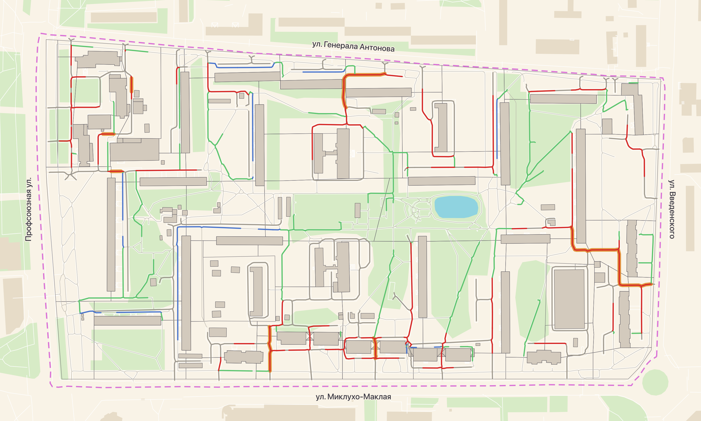
0
100
200 м
Легенда
совмещение потоков — 409 м
путь отдельно от проезда — 2,7 км
путь по тротуару — 0,8 км
путь по проезжей части — 2,8 км
проезды
409 м
проездов, где много и людей, и машин
Средовой анализ придомовых территорий жилой застройки
Команда 2
Москва 2026
02 Функции
Проектный семинар · модуль 1
Занятие 4
сл.15
Потоки людей: к метро и «Ашану»
В субботу считали людей на 25 точках по периметру. Самые людные — у выхода метро на западе (точки 25 и 1) и на юге, где через Миклухо-Маклая переходят к ТЦ (6 и 7). Розовые и фиолетовые линии — пути от всех подъездов к метро и к переходу: толще там, где идёт больше домов.
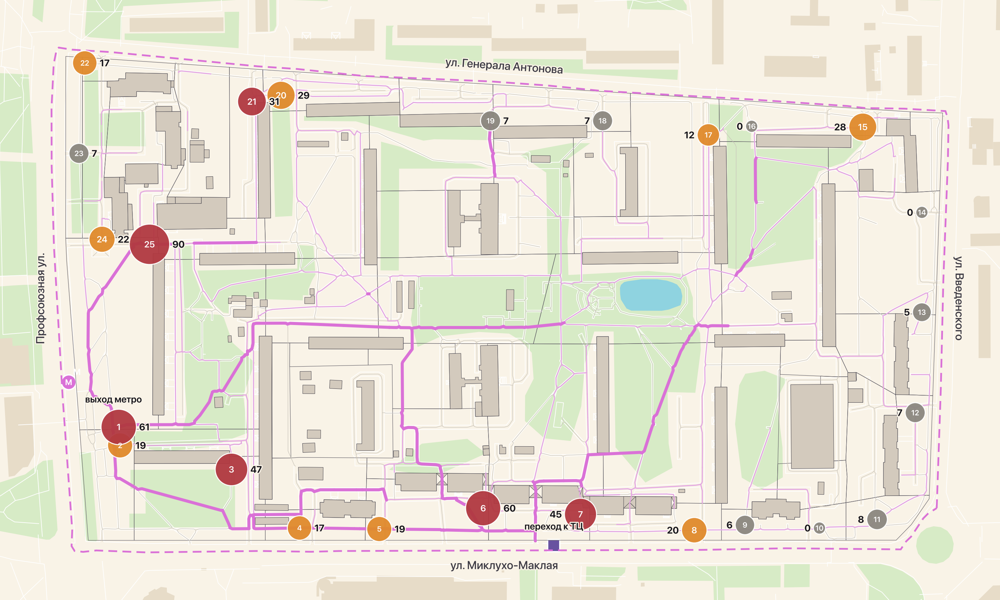
0
100
200 м
Легенда
путь к метро (толщина — число подъездов)
путь к ТЦ (толщина — число подъездов)
поток высокий
поток средний
поток низкий
номер точки в кружке, рядом — человек в час (суббота)
Точка 25 у выхода метро — 90 человек в час в субботу.
Средовой анализ придомовых территорий жилой застройки
Команда 2
Москва 2026
03 Люди и контроль
Проектный семинар · модуль 1
Занятие 4
сл.16
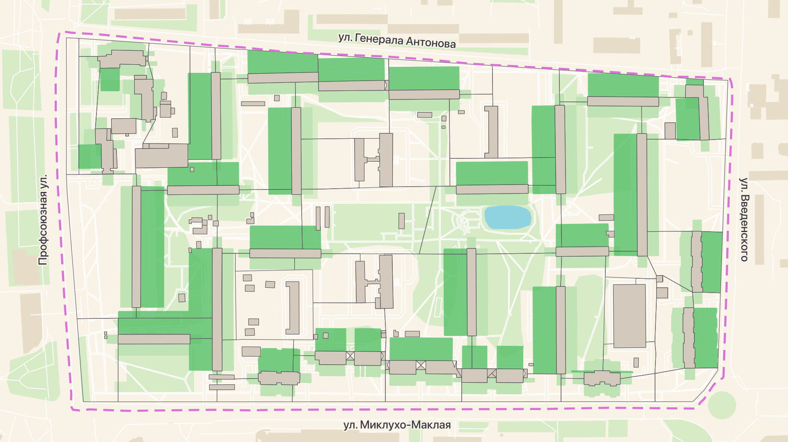
0
200
400 м
Контроль жилья
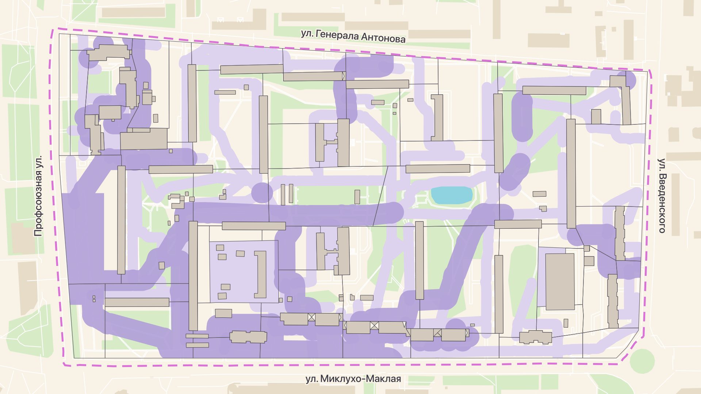
0
200
400 м
Контроль потока
Кто присматривает за двором
Контроль жилья — окна и подъезды: активный в 30 м от фасадов с подъездами, пассивный в 15 м от торцов и глухих фасадов. Контроль потока — люди на дорожках: активный в 15 м от людных путей, у выхода метро и перехода к ТЦ, пассивный в 7,5 м от путей потише.
7,0 га
активный жилья
4,8 га
пассивный жилья
12,8 га
активный потока
8,9 га
пассивный потока
активный: фасады с подъездами, 30 м
пассивный: торцы и фасады без подъездов, 15 м
активный: людные пути, метро, переход, входы в организации, 15 м
пассивный: пути 2–3, участки школ, 7,5 м
Вывод
Поток контролирует больше, чем окна: людные пути к метро и магазинам сами делают двор просматриваемым.
Средовой анализ придомовых территорий жилой застройки
Команда 2
Москва 2026
03 Люди и контроль
Проектный семинар · модуль 1
Занятие 4
сл.17
Насколько двор под присмотром
Сложили все зоны. Контролируемая земля — под активным контролем жилья или потока, частично — только под пассивным, неконтролируемая — вне всех зон. Доли — от свободной от зданий земли квартала.
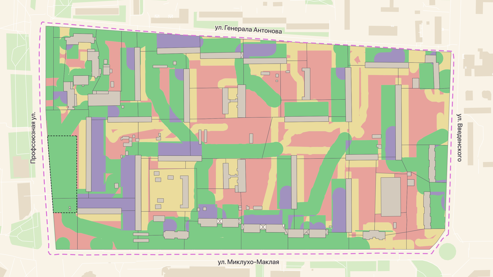
0
100
200 м
контролируемая — 52 %
частично контролируемая — 22 %
неконтролируемая — 26 %
конкуренция активных контролей — 3,3 га
площадь у выхода метро
Свободная территория
52 %
22 %
26 %
под контролем
частично
без контроля
3,3 га
где окна и поток спорят за одно место
Вывод
Край квартала и путь к метро под присмотром. Без контроля остаются середины больших дворов — 24, 25, 32, 34, 45 — дальше 30 м от подъездов и в стороне от людных путей.
Средовой анализ придомовых территорий жилой застройки
Команда 2
Москва 2026
03 Люди и контроль
Проектный семинар · модуль 1
Занятие 4
сл.18
Площадки: кто за ними смотрит
Площадка — главное «место поведения» во дворе. Методика делит пространство вокруг подъезда на ближнюю зону (до 30 м, здесь нужен присмотр из окон) и среднюю (30–100 м).
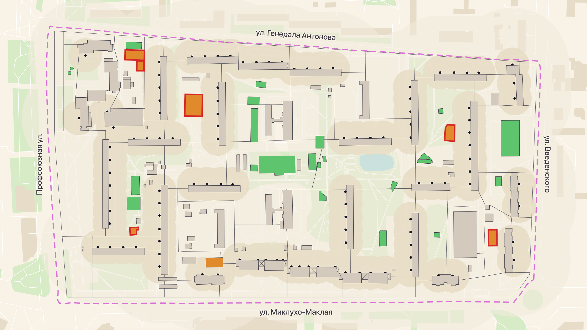
0
100
200 м
площадка в ближней зоне (до 30 м) — 7
в средней зоне (30–100 м) — 23
ближняя вне активного контроля (п. 3.3) — 6
подъезд
30
площадок: 16 детских, 10 спортивных, 3 воркаут, одна для собак
19 из 30
стоят на неконтролируемой земле
Вывод
6 площадок ближней зоны стоят вне активного контроля жилья — это нарушение п. 3.3. Остальные в средней зоне, в центре дворов, где за детьми смотрят только родители рядом.
Средовой анализ придомовых территорий жилой застройки
Команда 2
Москва 2026
03 Люди и контроль
Проектный семинар · модуль 1
Занятие 4
сл.19
Освоенность дворов
Участок освоен, если он обустроен и им пользуются. Обустроен — площадка, покрытие или газон у дорожки, подъезда, площадки; используется — у людной дорожки, подъезда, площадки или по нашим наблюдениям. Зелёный массив без дорожек — неосвоенный пустырь.
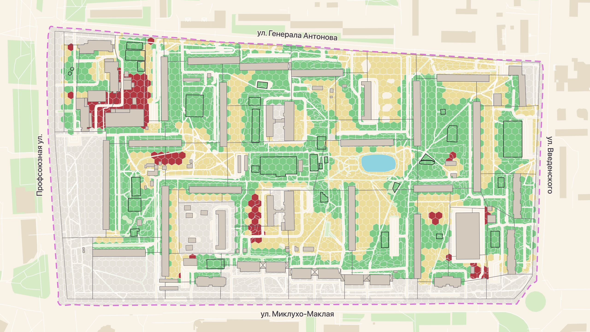
0
100
200 м
освоенная — 59 %
частично освоенная — 34 %
неосвоенная — 7 %
не оценивается (школы, детсады, вне ячеек)
площадки
59 %
земли во дворах освоено
7 %
заброшено — 1,4 га
Вывод
Центр квартала с площадками и прудом — обжит. Заброшены зелёные «карманы» за домами, куда не ведёт ни одна дорожка, и двор МИСИС за зданиями (ячейка 7).
Средовой анализ придомовых территорий жилой застройки
Команда 2
Москва 2026
03 Люди и контроль
Проектный семинар · модуль 1
Занятие 4
сл.20
Двор живёт и без присмотра
Наложили контроль на освоенность, как просит задание: где обжитая земля под присмотром, а где люди осваивают двор сами.
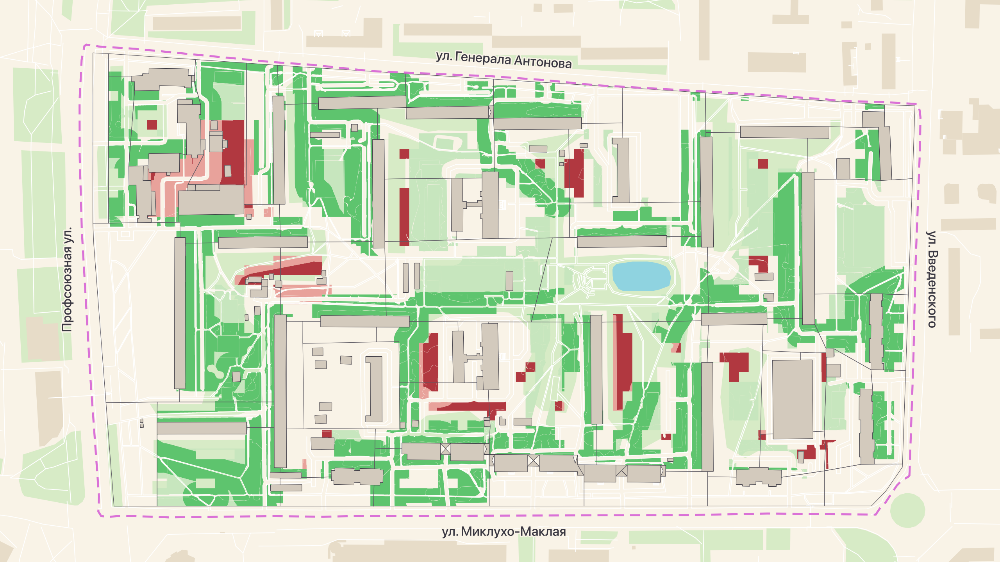
0
100
200 м
освоено и под контролем
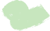
освоено, но без контроля
заброшено и без контроля
заброшено при контроле
освоено
частично
заброшено
контроль
7,1 га
2,3 га
0,3 га
частично
2,0 га
2,1 га
0,2 га
без контроля
2,9 га
2,4 га
0,8 га
Вывод
Освоенная земля в основном под контролем. А неконтролируемая всё равно наполовину обжита: из 1,4 га заброшенного 0,8 га лежит вне всех зон.
Средовой анализ придомовых территорий жилой застройки
Команда 2
Москва 2026
03 Люди и контроль
Проектный семинар · модуль 1
Занятие 4
сл.21
Пространственно-планировочные проблемы
Розовым — дворы неудачной формы (23 ячейки): слишком широкие для своих домов или открытые со всех сторон. Тёмно-красным — изношенные дома, треугольниками — неоформленные входы, штриховкой — две ячейки вне зафиксированных границ.
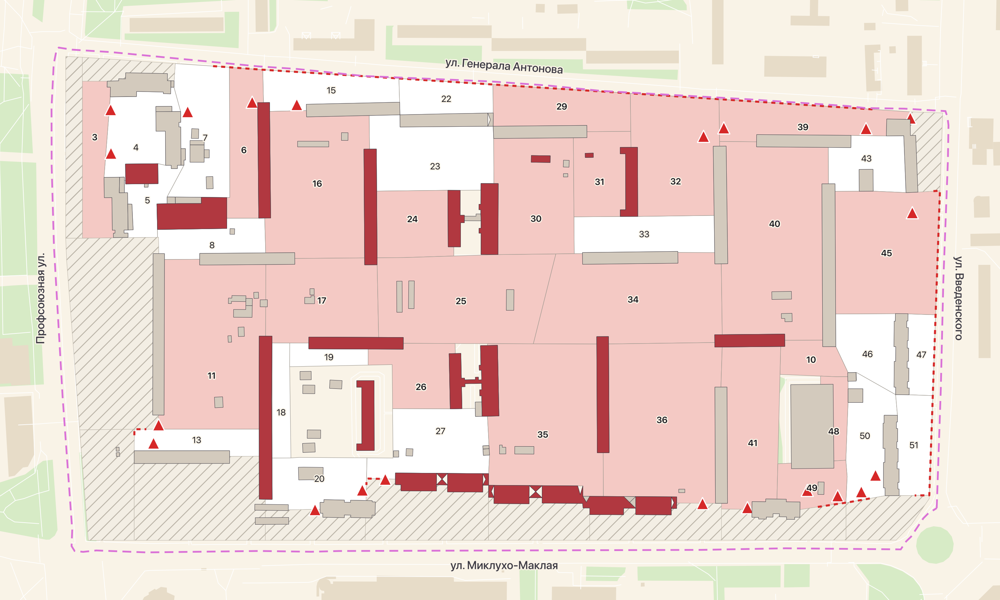
0
100
200 м
Легенда
1.1 неудачная форма двора (комфорт ниже 0,67) — 23 ячеек
1.2 неорганизованный вход — 38 (в 16 ячейках)
1.3 вне зафиксированных границ — 2 ячейки
1.4 здание с износом от 40 % — 14 (рядом с 30 ячейками)
Изношенные дома стоят по всему кварталу — п. 1.4 нарушен в 30 ячейках.
Средовой анализ придомовых территорий жилой застройки
Команда 2
Москва 2026
04 Проблемы
Проектный семинар · модуль 1
Занятие 4
сл.22
Функционально-планировочные проблемы
Почти всё собрано на юге, у домов с магазинами на Миклухо-Маклая: зоны загрузки, мусорные площадки и проезды, где пешеходы идут вместе с машинами. Номера — ячейки хотя бы с одним нарушением.
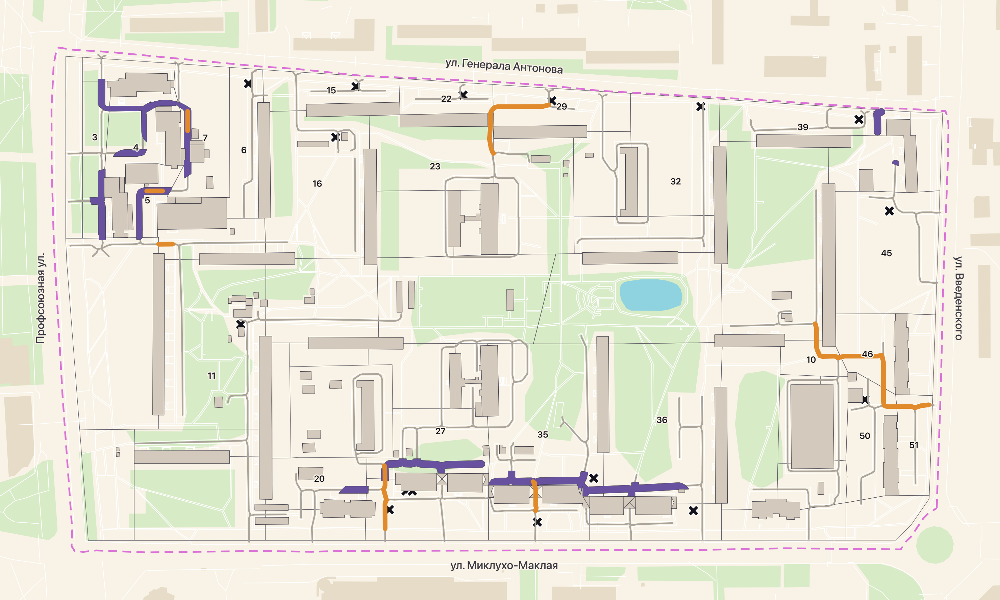
0
100
200 м
Легенда
2.1 загрузка с заездом грузовиков — 28 зон, 15 ячеек
2.2 опасный открытый объект — 16, 12 ячеек
2.3 пешеходы и машины на одном проезде — 409 м, 8 ячеек
внутриквартальные проезды
Серые линии — все внутриквартальные проезды, оранжевые — участки совмещения потоков.
Средовой анализ придомовых территорий жилой застройки
Команда 2
Москва 2026
04 Проблемы
Проектный семинар · модуль 1
Занятие 4
сл.23
Социально-планировочные проблемы
Розовым — земля без присмотра, сиреневым — где окна и людный поток спорят за одно место, тёмно-красным — заброшенные карманы. Пунктир — транзит под окнами, жёлтым — площадки вне нужного контроля.
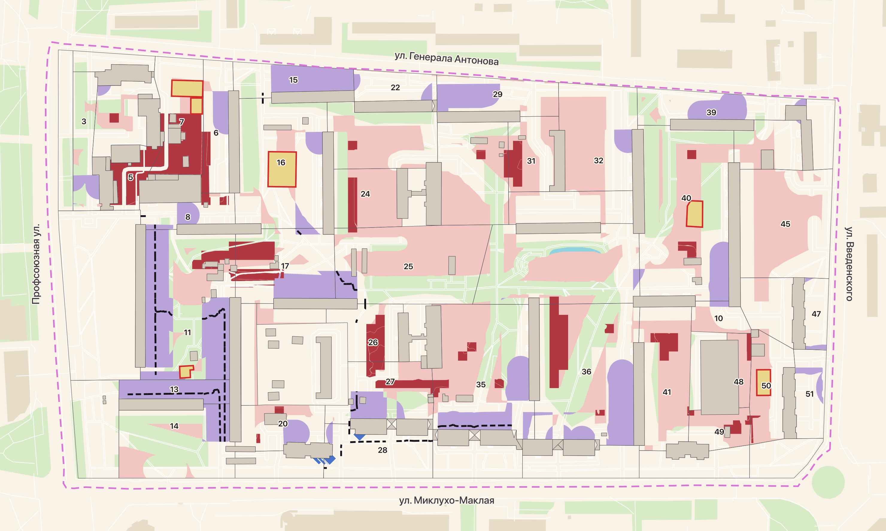
0
100
200 м
Легенда
3.1 транзит под окнами — 813 м, 7 ячеек
3.2 сервис с внешним транзитом — 1 ячейка
3.3 площадка без нужного контроля — 6
3.4 неконтролируемая территория
3.4 конкуренция активных контролей
3.4 заброшенная территория
П. 3.4 нарушен в 32 ячейках: чаще всего из-за спорного контроля у людных путей.
Средовой анализ придомовых территорий жилой застройки
Команда 2
Москва 2026
04 Проблемы
Проектный семинар · модуль 1
Занятие 4
сл.24
Сводный счёт
Сложили нарушенные пункты по каждой ячейке: 151 нарушение на 42 ячейки — в среднем три с половиной на двор. В ячейке — номер и счёт.
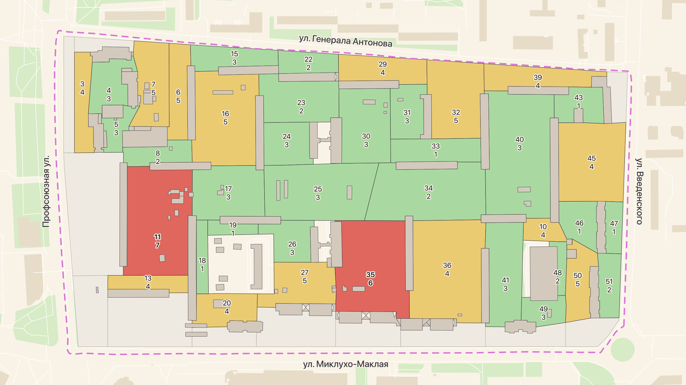
0
100
200 м
высокий счёт, 6+ — 7
средний, 4–5 — 13
низкий, 0–3 — 22
номер ячейки / число нарушенных пунктов
7
высокий, 6+
13
средний, 4–5
22
низкий, 0–3
1.1
1.2
1.3
1.4
2.1
2.2
2.3
3.1
3.2
3.3
3.4
№11
8
№14
7
№28
7
№6
6
№16
6
№32
6
№35
6
Больше всего нарушений там, где в квартал входят потоки к метро и магазинам: 11 и 14 на западе, 28 и 35 на юге. Ещё три двора на севере — 6, 16, 32 — набирают по 6 из-за загрузки и мусорок.
Средовой анализ придомовых территорий жилой застройки
Команда 2
Москва 2026
04 Проблемы
Проектный семинар · модуль 1
Занятие 4
сл.25
Итог: проблемы планировки дворов
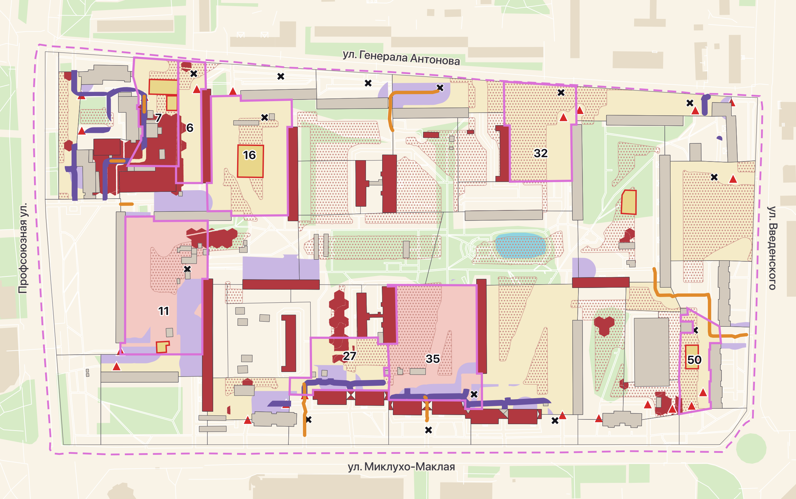
0
100
200 м
ячейка с высоким счётом (6+ нарушений)
неконтролируемая территория
конкуренция активных контролей
заброшенная территория
изношенное здание (от 40 %)
зона загрузки
пешеходы на проезде
неорганизованный вход
мусорная площадка
площадка без нужного контроля
фото: двор ячейки 11
Ячейка 11 — 8 из 11
Огромный двор у Профсоюзной: путь к метро идёт под окнами, рядом загрузка и мусор, середина без присмотра.
фото: выход метро у ячейки 14
Ячейка 14 — 7 из 11
Полоса у выхода метро: вне границ двора, транзит и машины на одном проезде.
фото: загрузка во дворе 28
Ячейка 28 — 7 из 11
Двор за магазинами на Миклухо-Маклая: грузовики, мусор, неоформленные входы и транзит к «Ашану».
фото: двор ячейки 35
Ячейка 35 — 6 из 11
Большой двор на юге: изношенные дома, загрузка и мусорка, транзит к переходу под окнами.
Средовой анализ придомовых территорий жилой застройки
Команда 2
Москва 2026
04 Проблемы
Проектный семинар · модуль 1
Занятие 4
сл.26
С чего начинать: четыре двора
Ячейки 11, 14, 28, 35 остаются в высоком классе почти при любых порогах — даже если снять наши допущения.
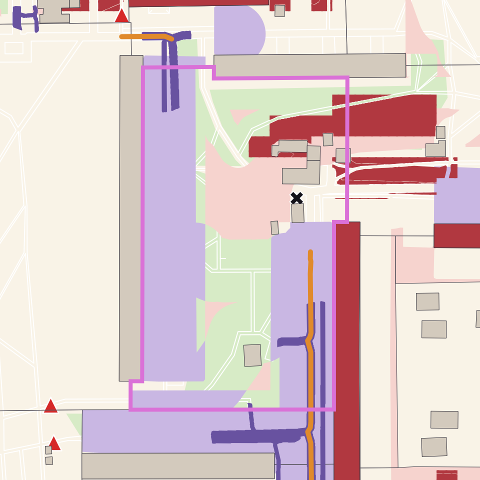
Ячейка 11
8/11
1.1 форма двора
1.4 изношенное здание
2.1 загрузка
2.2 опасный объект
2.3 пешеходы на проезде
3.1 транзит у подъездов
3.3 площадка без присмотра
3.4 без контроля / спорный
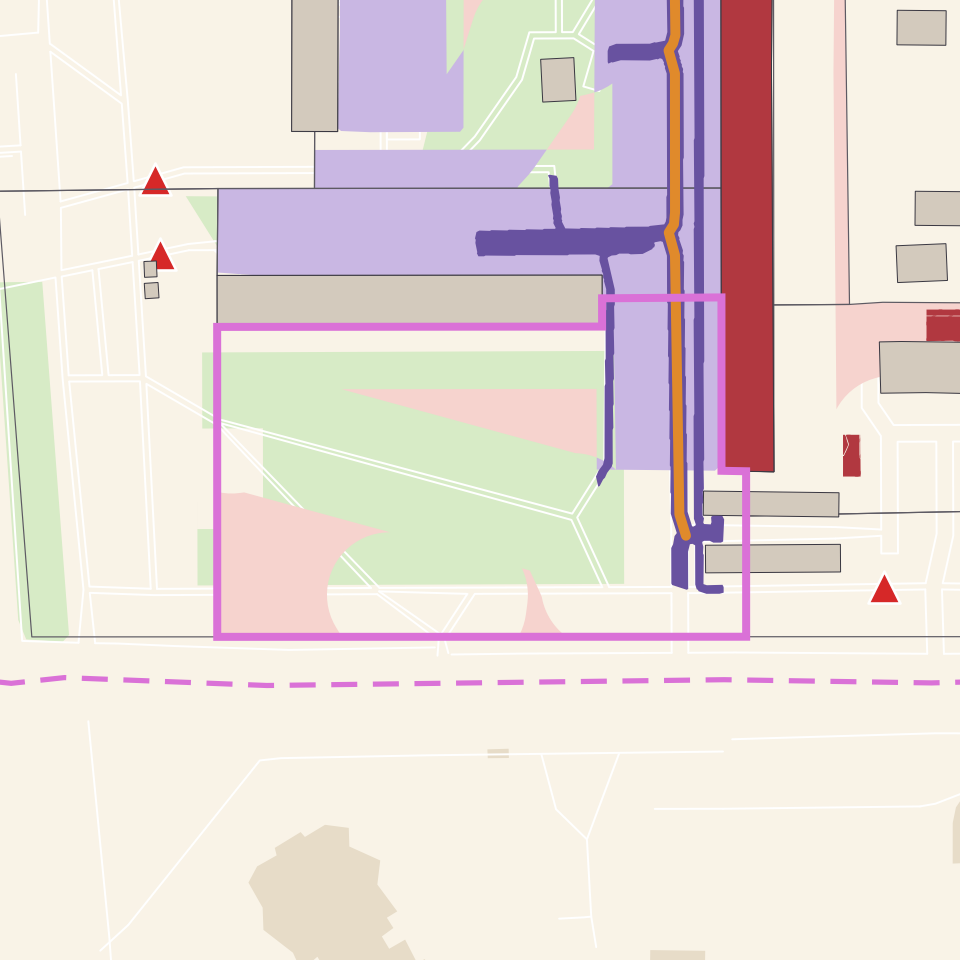
Ячейка 14
7/11
1.1 форма двора
1.3 вне границ двора
1.4 изношенное здание
2.1 загрузка
2.3 пешеходы на проезде
3.1 транзит у подъездов
3.4 без контроля / спорный
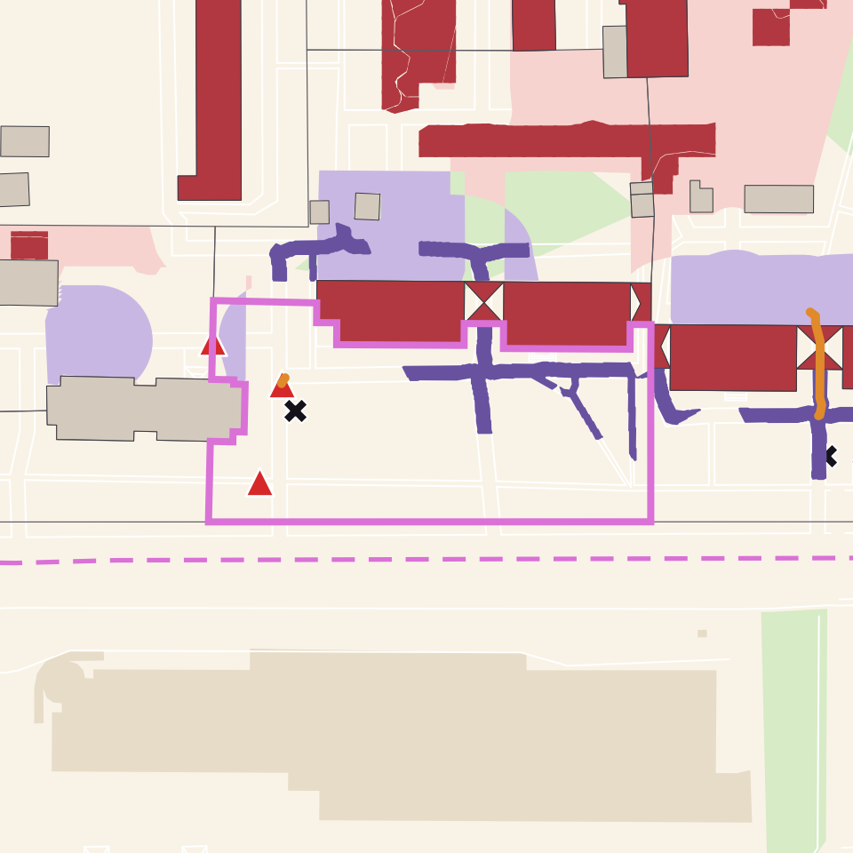
Ячейка 28
7/11
1.2 неоформленный вход
1.3 вне границ двора
1.4 изношенное здание
2.1 загрузка
2.2 опасный объект
3.1 транзит у подъездов
3.2 сервис с транзитом
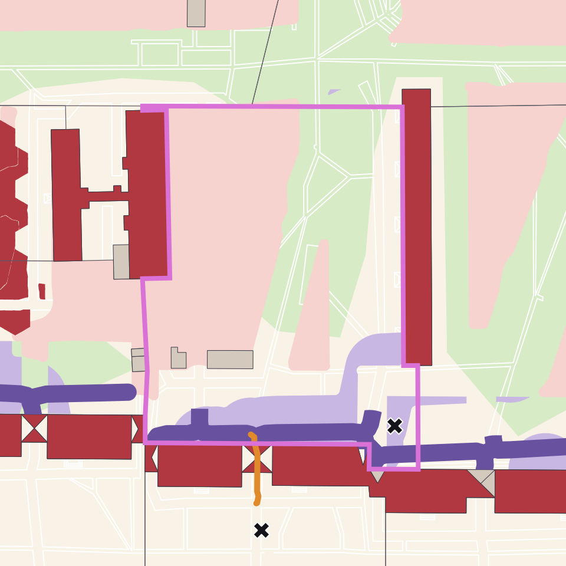
Ячейка 35
6/11
1.1 форма двора
1.4 изношенное здание
2.1 загрузка
2.2 опасный объект
3.1 транзит у подъездов
3.4 без контроля / спорный
Средовой анализ придомовых территорий жилой застройки
Команда 2
Москва 2026
04 Проблемы
Проектный семинар · модуль 1
Занятие 4
сл.27
Насколько надёжен счёт
Часть порогов и данных — наш выбор. Поэтому мы двигали каждый порог в обе стороны и снимали допущения по одному и все вместе, а потом смотрели, какие дворы остаются в высоком классе.
Ядро — ячейки 11, 14, 28, 35 — почти не меняется. Сильнее всего на итог влияют мусорные площадки и износ по нашей оценке.
Средовой анализ придомовых территорий жилой застройки
Команда 2
Москва 2026
04 Проблемы
Проектный семинар · модуль 1
Занятие 4
сл.28
На что опереться
Предпосылки — то, что уже работает. 19 дворов удобны по форме; 7,1 га обжитой земли под присмотром; 25 входов оформлены; 1,3 км людных пешеходных осей связывают дворы с метро и магазинами; 18 закрытых объектов — аптеки, клиники, спортшколы — работают на жителей.
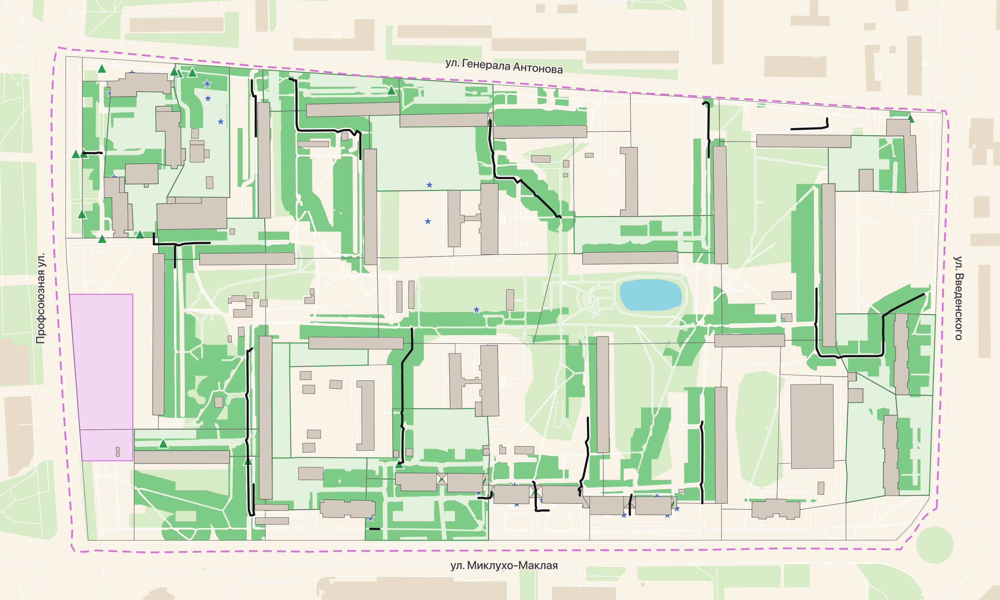
0
100
200 м
Легенда
комфортный двор — 19
освоено и под контролем — 7,1 га
людная пешеходная ось (4+ путей)
организованный вход — 25
благоприятный закрытый объект — 18
площадь у выхода метро
19
комфортных дворов
7,1 га
обжито и под присмотром
Средовой анализ придомовых территорий жилой застройки
Команда 2
Москва 2026
05 Предпосылки и выводы
Проектный семинар · модуль 1
Занятие 4
сл.29
Выводы
Что показал анализ 42 дворов по 11 пунктам и что из этого следует для проекта.
01
Общие беды квартала
Изношенные дома рядом — 30 ячеек, неудачная форма двора — 23, нет контроля или он спорный — 32, неоформленные входы — 16. Это проблемы всего квартала, а не отдельных дворов.
30
ячеек с изношенным зданием рядом
02
Где хуже всего
Дворы 11, 14, 28, 35 — на путях к метро и «Ашану». Здесь сходятся транзит, загрузка магазинов, мусорки и отсутствие присмотра.
8/11
нарушений в ячейке 11
03
На что опереться
19 удобных дворов, 7,1 га обжитой земли под присмотром, людные оси к метро. Двор живёт: заброшено только 7 % земли.
59 %
земли освоено
04
Что зависит от нас
Мусорки как опасные объекты и износ по нашей оценке дают заметную часть нарушений: без них высоких ячеек остаётся три.
3
высоких ячейки без допущений
Что дальше
Часть II занятия: как каждое нарушение меняет контроль и освоенность двора.
Проверить на месте износ 8 домов, мусорные площадки и новые стоянки из чертежа.
Начать проект с дворов 11, 14, 28, 35, опираясь на пути к метро и удобные дворы.
Средовой анализ придомовых территорий жилой застройки
Команда 2
Москва 2026
05 Предпосылки и выводы
Проектный семинар · модуль 1
Занятие 4
сл.30
Команда 2
Итоги в цифрах
01
42
двора в анализе
02
151
нарушение
03
4
двора — ядро проблем
04
7,1 га
обжито и под присмотром
фото: двор в Коньково
Спасибо
за внимание
Средовой анализ придомовых территорий жилой застройки